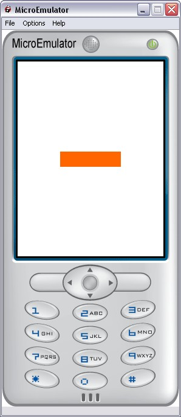

FocusBar prototype

Highlight the focused element (eg, the current element of a list).
Style fields
- MFString images - List of images for background and overlay.
- MFString style - Style for this prototype. Default: "FocusBar"
- SFVec2f size - Focus bar size
Warning:
Define style is required (we can use the default style - see
Style node).
Events
- SFInt32 move - Trigger overlay animation
- SFVec2f translation - Move Focus bar to given position